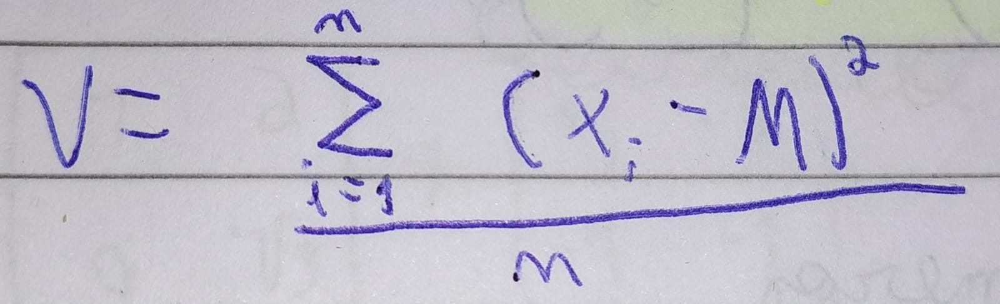

Estatística
Média(M)
A média é a soma de todos os números divido pela quantidade de números do conjunto
Fórmula:(de uma forma mais básica e fácil de entender)
M = (n1 + n2 + n3 ... + nn) / n
Exemplo 1:
conjunto de números: 1, 2, 3, 4, 5
M = (1 + 2 + 3 + 4 + 5) / 5(quantiade de números do conunto)
M = 15 / 5
M = 3
Exemplo 2:
conjunto de números: 7, 2, 11, 4, 6
M = (7 + 2 + 11 + 4 + 6) / 5(quantiade de números do conunto)
M = 30 / 5
M = 6
Moda
A moda é o número que mais se repete em um determinado conjunto de números
Para calcular a moda basta contar quantas vezes os numeros aparecem e ver
qual se repetiu mais vezes, uma coisa que pode ajudar nessa contagem é
organizar os números do menor para o maior.
Se dois números se repetirem a mesma quantidade de vezes e esses dois
tiverem a maior frequência do conjunto de números, você deve considerar
os dois como a moda. Nesse caso ele seria bimodal. Se tiver mais do que
dois números com a maior frequência, então todos serão modas e será
multimodal.
Exemplo 1:
Conjunto de números: 2, 2, 4, 6, 19, 2, 4
Moda: 2, pois o número '2' se repete 3 vezes, possuindo assim a maior frequência
Exemplo 2:
Conjunto de números: 1, 1, 3, 6, 9, 3, 4
Moda: 1 e 3, pois os dois possuem a maior frequência. A moda é bimodal
Exemplo 3:
Conjunto de números: 1, 7, 8, 2, 4, 5, 10, 7, 2, 1, 5, 2, 1, 7
Moda: 1, 2 e 7, pois os três possuem a maior frequência. A moda é multimodal
Mediana
A Mediana é o "numero do meio" em uma sequência de números.
Para calcular a mediana, basta você pegar todos os numeros
do conjunto e ordená-los do menor para o maior, então é só
observar qual foi o número que ficou no meio dessa sequência.
Porém, se a quantidade total de numeros for par, não terá um
único número no meio, terão dois, nesse caso você deve pegar
esses dois números e fazer a média entre eles, essa será a mediana.
Exemplo:
Sequência de números: 10, 3, 7, 1, 0
Primeiro você deve ordenar do menor para o maior: 0, 1, 3, 7, 10
Nesse caso podemos ver que o '3' é o número do meio, logo, ele é a mediana.
Outro exemplo:
Sequência de números: 8, 10, 2, 0, 4, 6
Primeiro você deve ordenar do menor para o maior: 0, 2, 4, 6, 8, 10
Nesse caso podemos ver que o '4' e o '6' são os números do meio.
Nessa situação fazemos a média entre o 4 e o 6, e o resultado é 5.
5 é a mediana.
A partir daqui fica um pouquinho mais complicado
Variância(V)
A variância define o quanto o conjunto de números varia em relação a sua média.
Para podermos calcular a variância primeiro precisamos calcular a média.
Fórmula:

Em outra palavras: é a soma de todos os números vezes eles mesmos menos a média elevado a dois.
Fazendo a fórmula: V = [ (x1 - M)2 + (x2 - M)2 + ... +
(xn - M)2 ] /n
Exemplo:
Sequência de números: 10, 3, 7, 1, 4
M = (10 + 3 + 7 + 1 + 4) / 5
M = 25 / 5
M = 5
Agora calculamos a variância
V = [ (10 - 5)2 + (3 - 5)2 + (7 - 5)2 + (1 - 5)2 + (4 -
5)2 ] / 5
V = [ (5)2 + (-2)2 + (2)2 + (-4)2 + (-1)2 ]
/5
V = [ 25 + 4 + 4 + 16 + 1 ] /5
V = 50 / 5
V = 10
Desvio Padrão(DP)
A variância acaba por mudar a unidade de medida de algumas coisas quando eleva ela ao quadrado, por isso existe o desvio padrão, para pegar a raiz da variância e fazer voltar a mesma unidade de medida
Fórmula:
DP = √V
Exemplo:
Pegarei a variância do exemplo anterior.
DP = √10
DP ≈ 3,1623
Coeficiente de Variação(CV)
O coenficiente de variação basicamente transforma o DP em uma porcentagem
Fórmula:
CV = (DP / M) * 100
Exemplo:
Pegarei o DP e a Média do exemplo da Variância.
CV = (3,1623 / 5) * 100
CV = 0.63246 * 100
CV ≈ 63,246%